BAI modeling
library(lme4)
palette("Tableau 10")
library(patchwork)Introduction
Basal area increment is a key feature for analysis. Dbh data is available for almost all trees in both periods, it is more precise and diameter growth (as opposed to height growth) is expected to have a strong response to thinning treatments.
Define trees of interest
For basal area increment, I will include all live trees without broken or dead tops. I am including trees identified as leaning, these should mostly have good growth and accurate measurements. I am excluding bear damaged trees. Increment for a period will be assigned to the beginning of period observation. This means I will want to exclude observations in which a tree is damaged by bear in this or a subsequent observation.
I am including trees with dead or broken tops when they didn’t lose more than 25% of their initial height. This is only about 25 trees. There are many more with broken tops that are missing heights, but histograms of the diameter increment of these suggest that they are not that different from the set of trees that have heights.
I’m also filtering out observations that don’t have crown ratio, this loses 1 redwood in the L40 treatment, dropping observations from 10 to 9, as well as losing 10 redwood in H80, but this is less of a problem. If CR proves not useful, I will remove this constraint.
I’m also removing trees with less than -0.2 (negative) diameter increment
test_d <- d_l %>%
group_by(tree_id) %>%
# only use unbroken live sese or psme from 2018
filter(
d_inc1 >= -0.2,
# remove trees that lost more than 25% of height
is.na(ht_inc1) | (ht_inc1 * 5 / ht) > -1/4,
spp %in% c("SESE3", "PSMEM"),
year %in% c("08", "13"),
# Live and doesn't die by next period
status == 1 & lead(status == 1),
!is.na(dbh),
# bear free this period and next
!bear & lead(!bear),
!is.na(cr)
) %>%
mutate(
treat_method = str_extract(treatment, "C|H|L"),
treat_density = str_extract(treatment, "C|40|80"),
treat_status = if_else(str_detect(treatment, "C"), "unthinned", "thinned"),
year = factor(year, ordered = FALSE),
cr = cr / 100
) %>%
select(-c(h_dist, azi, rot, cc, x, y, live)) %>%
# add a scaled ba_inc1 variable for convenience
ungroup() %>%
mutate(ba_inc_scaled = (ba_inc1 - min(ba_inc1) + 1))
# Alter one outlier record in year 2013 by using data from previous year
big_tree <- "4H80.4019"
replacement_data <- filter(test_d, tree_id == big_tree, year == "13") %>%
transmute(
dbh = dbh,
d_inc1 = d_inc2,
ba = ba,
ba_inc1 = ba_inc2,
)
bad_rec <- with(test_d, which(tree_id == big_tree & year == "13"))
test_d[bad_rec, names(replacement_data)] <- replacement_data
display_vars <- function(x) {
select(x, c(tree_id, year, dbh, ht_p, bear, cr, notes, cond, d_inc1, ba_inc1))
}ggplot() +
geom_density(
data = filter(test_d, !is.na(ht_inc1)),
aes(x = d_inc1, fill = "heights available"), alpha = 0.5) +
geom_density(
data = filter(test_d, is.na(ht_inc1)),
aes(x = d_inc1, fill = "heights NA"), alpha = 0.5) +
# geom_histogram(
# data = filter(test_d, !get_cond(2, 3), !lead(get_cond(2, 3))),
# aes(fill = "unbroken"), alpha = 0.5)
labs(x = "diameter increment", y = "Density", fill = NULL)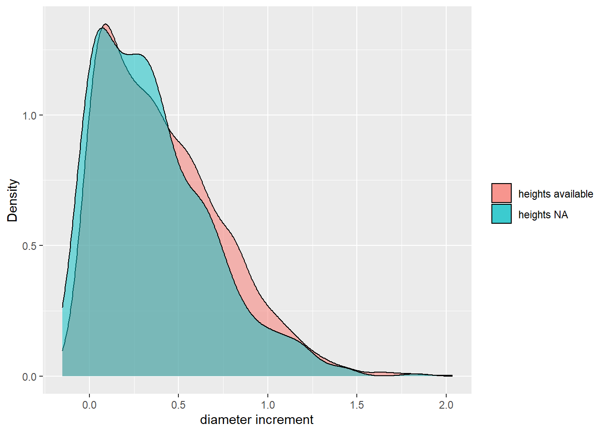
I also need to have a scaling value for making response non-negative for log transformation which will be defined as
-(min(ba_inc1)) + 1
for convenience, I computed a new response variable based on this
value called ba_inc_scaled
scale_val <- -min(test_d$ba_inc1) + 1Number of redwoods and Douglas fir trees in each plot and each treatment. I have a little problem with sample size when it comes to redwood. Some plots have zero or one observation. It seems like bears took a tole on the
test_d %>%
group_by(plot) %>%
mutate(n_sese = sum(spp == "SESE3")) %>%
group_by(treatment) %>%
mutate(n_sese_treat = sum(spp == "SESE3")) %>%
arrange(desc(n_sese_treat), desc(n_sese)) %>%
ggplot(aes(fct_inorder(plot))) +
geom_bar(aes(fill = spp)) +
geom_text(
aes(label = after_stat(count), group = spp),
stat = "count",
position = position_stack(vjust = .5)
) +
facet_wrap(~year) +
coord_flip() +
scale_fill_manual(values = palette()) +
labs(x = "Plots, nested within treatments")test_d %>%
group_by(plot) %>%
mutate(n_sese = sum(spp == "SESE3")) %>%
group_by(treatment) %>%
mutate(n_sese_treat = sum(spp == "SESE3")) %>%
arrange(desc(n_sese_treat), desc(n_sese)) %>%
ggplot(aes(fct_reorder(treatment, n_sese, .desc = TRUE))) +
geom_bar(aes(fill = spp)) +
geom_text(
aes(label = after_stat(count),
group = spp),
stat = "count",
position = position_stack(vjust = .5)
) +
facet_wrap(~year) +
coord_flip() +
scale_fill_manual(values = palette())Data exploration
Outliers
Here I’m looking for any outliers in basal area increment, or extreme changes. There are definitely basal area outliers some of the most extreme can be explained by having bear damage, but on average, bear-damaged trees have diameter increments almost double those of non-bear-damaged. It is unclear whether this is due to loose bark, or the fact that these trees tend to be faster growing. This question might need further investigation. Following Dagley et. al 2018, I will remove bear damaged trees from analysis. Another option could be including bear damage as a covariate.
Note, I have already removed increments less than -0.2 and adjusted one large tree with extrememe growth using its first increment
# outliers defined as 1.5 times above or below IQR
test_d %>%
filter(
out(ba_inc1)
) %>%
group_by(tree_id) %>%
arrange(ba_inc1) %>%
display_vars %>%
color_groups()| tree_id | year | dbh | ht_p | bear | cr | notes | cond | d_inc1 | ba_inc1 |
|---|---|---|---|---|---|---|---|---|---|
| C2.4303 | 13 | 34.798 | 28.345 | FALSE | 0.30 | frass | 1.118 | 65.994 | |
| 3H80.3821 | 13 | 33.274 | 25.602 | FALSE | 0.25 | frass | 1.168 | 66.429 | |
| 3H40.1864 | 13 | 41.402 | 26.821 | FALSE | 0.35 | frass | 0.965 | 66.429 | |
| 4L80.1958 | 13 | 41.402 | 25.602 | FALSE | 0.20 | frass; BD healed | 4 | 0.965 | 66.429 |
| 4L40.3269 | 13 | 35.052 | 24.383 | FALSE | 0.25 | frass; small scar at base | 9 | 1.118 | 66.439 |
| C1.4205 | 13 | 35.306 | 24.688 | FALSE | 0.30 | NA | 4 | 1.118 | 66.885 |
| C4.4602 | 13 | 39.370 | 28.650 | FALSE | 0.20 | NA | 4 | 1.016 | 66.885 |
| 3L40.3208 | 08 | 30.480 | 22.249 | FALSE | 0.25 | X | 1.270 | 67.139 | |
| 4H40.3915 | 08 | 32.258 | 26.212 | FALSE | 0.30 | X | 1.219 | 67.615 | |
| 3L40.3222 | 13 | 39.878 | 24.688 | FALSE | 0.40 | frass | 4 | 1.016 | 67.696 |
| 4H80.4007 | 08 | 35.814 | 23.468 | FALSE | 0.25 | X | 1.118 | 67.777 | |
| 4H80.3982 | 13 | 51.054 | 28.650 | FALSE | 0.35 | frass | 0.813 | 67.777 | |
| 2L40.3490 | 13 | 34.290 | 31.088 | FALSE | 0.25 | FRASS | 4 | 1.168 | 68.294 |
| 1L40.3671 | 13 | 40.386 | 29.564 | FALSE | 0.30 | NA | 1,4,22 | 1.016 | 68.507 |
| 1L80.3435 | 13 | 40.386 | 24.383 | FALSE | 0.25 | NA | 4 | 1.016 | 68.507 |
| C1.4231 | 13 | 48.514 | 26.821 | FALSE | 0.25 | NA | 4 | 0.864 | 68.740 |
| 1H40.3003 | 13 | 40.640 | 25.907 | FALSE | 0.35 | NA | 22 | 1.016 | 68.912 |
| C3.4540 | 13 | 43.688 | 31.088 | FALSE | 0.35 | NA | 0.965 | 69.895 | |
| 1H80.3574 | 08 | 27.940 | 24.383 | FALSE | 0.20 | X | 1.422 | 70.372 | |
| 3L80.3302 | 08 | 33.782 | 22.859 | FALSE | 0.25 | X | 1.219 | 70.534 | |
| 3H40.4053 | 13 | 46.990 | 25.297 | FALSE | 0.25 | NA | 0.914 | 70.777 | |
| 1H40.3027 | 13 | 41.910 | 25.907 | FALSE | 0.40 | NA | 4,22 | 1.016 | 70.939 |
| C4.4635 | 13 | 35.814 | 28.345 | FALSE | 0.25 | frass | 1 | 1.168 | 71.091 |
| 4H80.4029 | 13 | 47.244 | 27.431 | FALSE | 0.35 | frass | 0.914 | 71.142 | |
| 2H80.3159 | 13 | 50.292 | 26.821 | FALSE | 0.25 | old bear damage | 0.864 | 71.152 | |
| 1H40.1911 | 13 | 32.512 | 25.907 | FALSE | 0.25 | NA | 1.270 | 71.192 | |
| 3H40.1862 | 08 | 27.178 | 20.725 | FALSE | 0.25 | X | 1.473 | 71.415 | |
| 1L40.3644 | 08 | 38.100 | 28.955 | FALSE | 0.25 | X | 1.118 | 71.790 | |
| C1.4180 | 13 | 47.752 | 26.516 | FALSE | 0.30 | NA | 0.914 | 71.871 | |
| 4L40.3277 | 13 | 34.798 | 22.249 | FALSE | 0.25 | will be measure with 3276 nest time | 3,6 | 1.220 | 72.557 |
| C1.4179 | 08 | 45.466 | 24.383 | FALSE | 0.35 | NA | 0.965 | 72.591 | |
| 1L40.3664 | 13 | 38.608 | 24.688 | FALSE | 0.30 | frass | 4,22 | 1.118 | 72.682 |
| 1H80.3574 | 13 | 35.052 | 27.735 | FALSE | 0.20 | frass | 22 | 1.219 | 72.966 |
| 3L40.3212 | 08 | 39.116 | 25.907 | FALSE | 0.35 | X | 1.118 | 73.574 | |
| 1H40.3029 | 08 | 41.402 | 26.212 | FALSE | 0.35 | X | 1.067 | 73.848 | |
| 1L40.3670 | 08 | 37.338 | 27.735 | FALSE | 0.30 | X | 1.168 | 73.888 | |
| 3H40.1856 | 13 | 34.036 | 24.078 | FALSE | 0.35 | frass | 1.270 | 74.233 | |
| 1L40.3662 | 13 | 41.656 | 27.126 | FALSE | 0.25 | NA | 22 | 1.067 | 74.273 |
| 3H40.1860 | 08 | 35.814 | 19.811 | FALSE | 0.35 | X | 1.219 | 74.425 | |
| 1L40.3679 | 08 | 37.846 | 26.516 | FALSE | 0.25 | X | 1.168 | 74.820 | |
| 2H40.3059 | 13 | 46.990 | 22.554 | FALSE | 0.20 | NA | 3,6 | 0.965 | 74.901 |
| 2L40.3485 | 13 | 29.972 | 27.431 | FALSE | 0.20 | FRASS | 1.422 | 74.912 | |
| 1H80.3528 | 13 | 38.100 | 29.259 | FALSE | 0.30 | NA | 1.168 | 75.287 | |
| 2L40.3510 | 08 | 33.274 | 24.383 | FALSE | 0.30 | X | 1.321 | 75.885 | |
| C4.4601 | 08 | 45.212 | 24.078 | FALSE | 0.30 | SPLIT BELOW DBH | 1.016 | 76.209 | |
| 4H40.3957 | 08 | 33.528 | 25.297 | FALSE | 0.25 | X | 1.321 | 76.411 | |
| 1L40.3670 | 13 | 43.180 | 27.431 | FALSE | 0.30 | NA | 22 | 1.067 | 76.827 |
| 1L80.3405 | 13 | 45.720 | 27.735 | FALSE | 0.25 | NA | 1.016 | 77.020 | |
| 2H40.3043 | 08 | 39.116 | 26.212 | FALSE | 0.30 | X | 1.168 | 77.151 | |
| C4.4700 | 13 | 39.116 | 29.259 | FALSE | 0.25 | NA | 1.168 | 77.151 | |
| C3.4446 | 13 | 45.974 | 23.468 | FALSE | 0.30 | old DBH | 1.016 | 77.425 | |
| 1H40.3029 | 13 | 46.736 | 29.564 | FALSE | 0.35 | illegible note | 22 | 1.016 | 78.641 |
| 4H40.3956 | 13 | 36.576 | 26.212 | FALSE | 0.25 | NA | 4 | 1.270 | 79.300 |
| 3H40.1875 | 08 | 43.434 | 26.516 | FALSE | 0.25 | X | 1.118 | 81.154 | |
| 3L80.3380 | 13 | 36.068 | 25.297 | FALSE | 0.30 | NA | 1.321 | 81.681 | |
| 2L80.3728 | 08 | 31.750 | 22.554 | FALSE | 0.20 | X | 1.473 | 81.995 | |
| 4L80.1932 | 13 | 55.118 | 29.564 | FALSE | 0.25 | frass; small wound at base | 4 | 0.914 | 82.451 |
| 4H40.3957 | 13 | 40.132 | 28.650 | FALSE | 0.30 | FRASS | 4 | 1.219 | 82.695 |
| 3H40.3200 | 13 | 40.386 | 27.431 | FALSE | 0.25 | frass | 1,4 | 1.219 | 83.181 |
| C4.4601 | 13 | 50.292 | 28.955 | FALSE | 0.20 | might have to measure as one tree with 4600 next remeasure | 1,3,6 | 1.016 | 84.281 |
| 2L80.3745 | 13 | 41.148 | 28.345 | FALSE | 0.20 | FRASS | 1 | 1.270 | 88.420 |
| 3H40.1859 | 13 | 29.718 | 19.811 | FALSE | 0.25 | limbs raked | 1.676 | 89.292 | |
| 1L40.3679 | 13 | 43.688 | 28.040 | FALSE | 0.25 | frass | 22 | 1.219 | 89.505 |
| C1.4209 | 13 | 56.896 | 25.602 | FALSE | 0.25 | triple top | 1,4,6 | 0.965 | 89.920 |
| 2H40.3081 | 13 | 48.768 | 26.516 | FALSE | 0.25 | NA | 1.118 | 90.518 | |
| 3L40.3212 | 13 | 44.704 | 28.650 | FALSE | 0.30 | flagged from raking; frass | 1.219 | 91.451 | |
| 3L40.3231 | 13 | 23.622 | 18.592 | FALSE | 0.15 | raked crown | 2.032 | 91.613 | |
| 4L40.3247 | 08 | 49.530 | 28.040 | FALSE | 0.35 | X | 1.118 | 91.856 | |
| 2H40.3036 | 13 | 32.512 | 20.725 | FALSE | 0.25 | NA | 4,7 | 1.626 | 93.396 |
| 3H40.1860 | 13 | 41.910 | 22.859 | FALSE | 0.35 | NA | 1.321 | 93.802 | |
| 3H40.4053 | 08 | 40.132 | 25.602 | FALSE | 0.25 | tagged as 4053 | 1.372 | 93.852 | |
| 2H40.3060 | 08 | 43.942 | 23.773 | FALSE | 0.30 | X | 1.270 | 93.994 | |
| 3H40.1848 | 13 | 37.592 | 27.431 | FALSE | 0.40 | frass | 1.473 | 95.514 | |
| 4L80.1932 | 08 | 49.276 | 26.516 | FALSE | 0.35 | ADVANCED REGEN | 1.168 | 95.798 | |
| 4L40.3257 | 13 | 39.878 | 27.735 | FALSE | 0.20 | frass | 1.422 | 97.045 | |
| 1L80.3464 | 13 | 53.086 | 27.735 | FALSE | 0.35 | NA | 1.168 | 102.791 | |
| 1L40.3644 | 13 | 43.688 | 33.222 | FALSE | 0.25 | NA | 23 | 1.422 | 105.557 |
| 3H40.1875 | 13 | 49.022 | 27.431 | FALSE | 0.25 | frass | 1 | 1.321 | 108.557 |
| 1L80.3393 | 13 | 51.562 | 28.345 | FALSE | 0.30 | NA | 1.321 | 113.827 | |
| 4L80.1968 | 13 | 41.910 | 19.811 | FALSE | 0.15 | frass | 1,3,4,6 | 1.626 | 117.394 |
| 3L40.1890 | 13 | 36.322 | 27.431 | FALSE | 0.35 | frass | 1 | 1.829 | 117.475 |
| 2H40.3060 | 13 | 50.292 | 24.992 | FALSE | 0.15 | NA | 1.422 | 120.313 | |
| 4L40.3247 | 13 | 55.118 | 29.869 | FALSE | 0.40 | frass | 1.321 | 121.204 | |
| 2H40.3087 | 08 | 38.100 | 24.383 | FALSE | 0.25 | X | 1.880 | 126.363 | |
| 2H80.3130 | 13 | 58.674 | 28.345 | FALSE | 0.35 | old bear damage | 1.321 | 128.582 | |
| 2H40.3086 | 08 | 57.658 | 25.602 | FALSE | 0.25 | X | 1.422 | 136.770 | |
| 2H40.3086 | 13 | 64.770 | 25.602 | FALSE | 0.20 | frass | 4 | 1.422 | 152.661 |
| 4H80.4019 | 08 | 53.340 | 25.602 | FALSE | 0.35 | X | 1.778 | 161.386 | |
| 4H80.4019 | 13 | 62.230 | 27.735 | FALSE | 0.40 | NA | 1.778 | 161.386 |
# dot plot of outliers
test_d %>%
ggplot(aes(x = ba_inc1, y = fct_reorder(tree_id, d_inc1))) +
geom_line(aes(group = tree_id), alpha = .3) +
geom_point(aes(color = year), alpha = .5) +
scale_y_discrete(breaks = NULL, expand = expansion(add = 10)) +
scale_color_manual(values = palette()) +
guides(color = guide_legend(override.aes = list(shape = c(19, 19)))) +
labs(
x = "BA increment (cm)",
y = "tree id (sorted by diameter increment)",
title = "data in dataset"
)
To put outliers in terms of ba_inc1 in context, if we look at the full dataset, including bear damaged trees, and plot diameter increment instead of basal area, then we see a more consistent gradient of diameter measurements.
d_l %>%
filter(year %in% c("08", "13"), live) %>%
ggplot(aes(x = d_inc1, y = fct_reorder(tree_id, d_inc1))) +
geom_line(aes(group = tree_id), alpha = .3) +
geom_point(aes(color = year), alpha = .5) +
scale_y_discrete(breaks = NULL, expand = expansion(add = 10)) +
scale_color_manual(values = palette()) +
guides(color = guide_legend(override.aes = list(shape = c(19, 19)))) +
labs(
x = "diameter increment (cm)",
y = "tree id ALL TREES (sorted by diameter increment)",
title = "all data"
)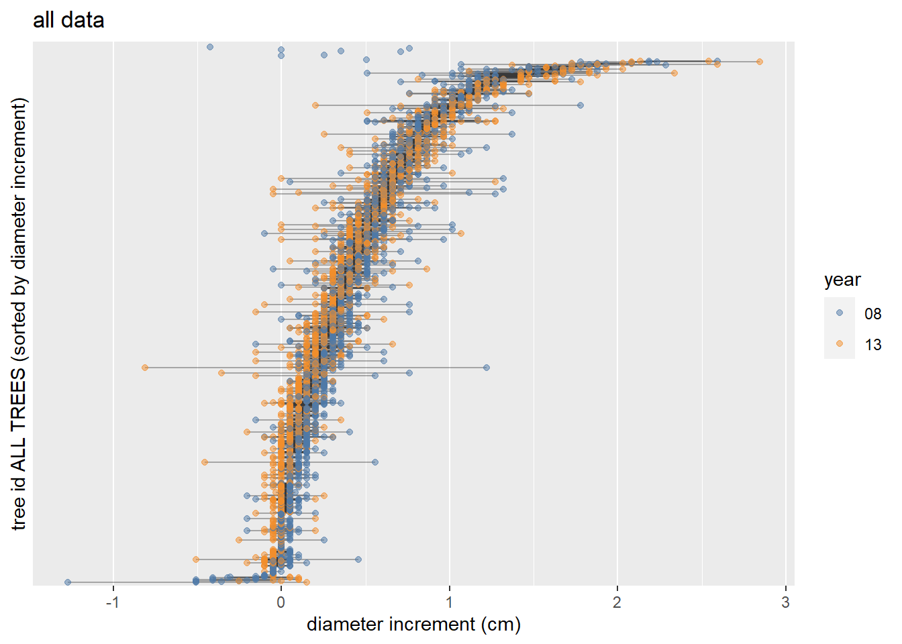
Negative values
Here is a summary of the remaining negative diameter increment values.
local({
neg_ba_inc <- test_d %>%
filter(ba_inc1 < 0) %>%
arrange(d_inc1) %>%
pull(d_inc1)
print(paste("N: ", length(neg_ba_inc)))
summary(neg_ba_inc)
})## [1] "N: 58"## Min. 1st Qu. Median Mean 3rd Qu. Max.
## -0.15240 -0.10160 -0.05080 -0.06832 -0.05080 -0.05080Crown ratio
I’m going to test cr in the model, it doesn’t lose too many more observations by including it, if it doesn’t seem to be worth it, I might include those few observations back in the data.
test_d %>%
ggplot(aes(x = cr, fill = spp)) +
geom_bar() +
facet_wrap(~ year)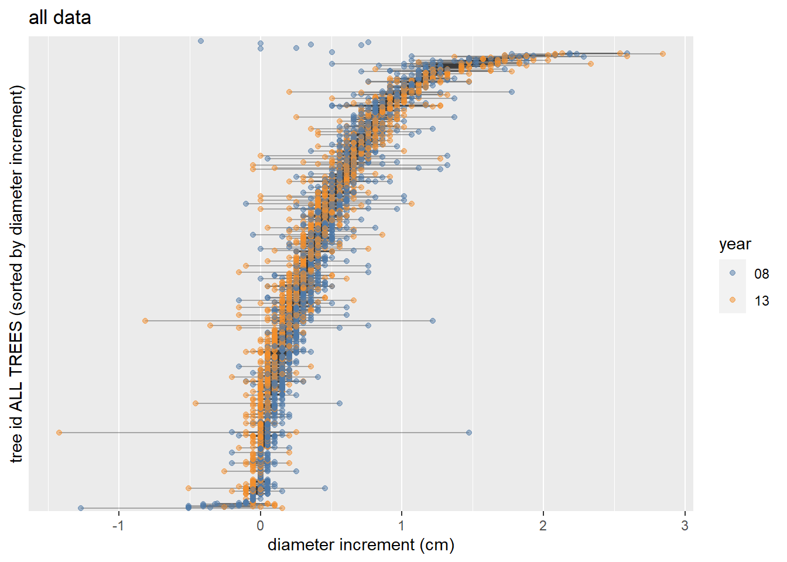
Plotting data
First I’ll look at distributions of the response:
hist(test_d$ba_inc1, main = "Basal area increment")
hist(log(test_d$ba_inc_scaled), main = "Log of basal area increment + constant")with(test_d, plot(dbh, ba_inc1))hist(test_d$dbh, main = "DBHt")hist(log(test_d$dbh + 18), main = "Log of DBH")relationship of ba_inc1 with dbh by species and year is not exactly linear, I will use a transformation or a GLM with a different distribution.
test_d %>%
ggplot(aes(x = dbh, y = ba_inc1, color = spp)) +
geom_point(alpha = 0.3) +
facet_wrap(~ year) +
scale_color_manual(values = palette())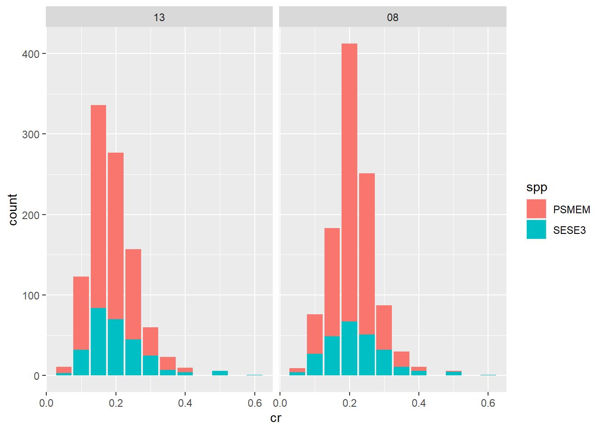
test_d %>%
ggplot(aes(x = (dbh), y = log(ba_inc_scaled), color = spp)) +
geom_point(alpha = 0.3) +
facet_wrap(~ year) +
scale_color_manual(values = palette())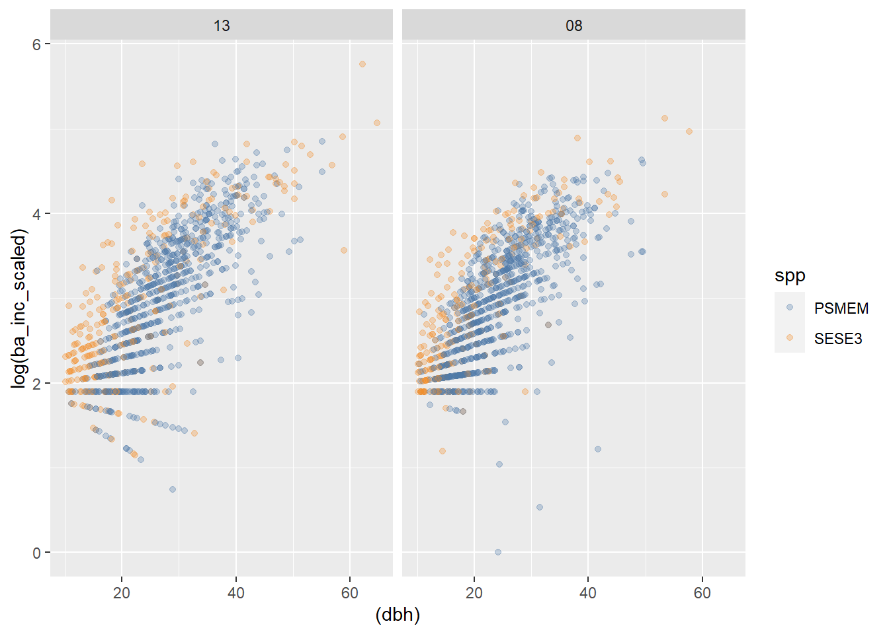
test_d %>%
ggplot(aes(x = log(dbh), y = (ba_inc1), color = spp)) +
geom_point(alpha = 0.3) +
facet_wrap(~ year) +
scale_color_manual(values = palette())test_d %>%
ggplot(aes(x = log(dbh), y = log(ba_inc_scaled), color = spp)) +
geom_point(alpha = 0.3) +
facet_wrap(~ year) +
scale_color_manual(values = palette())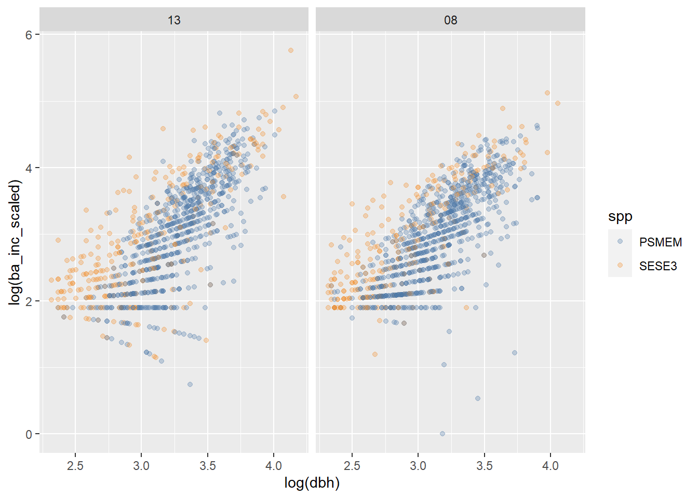
does crown ratio have a relationship with diameter increment?
test_d %>%
ggplot(aes(cr, d_inc1), color = spp) +
geom_point() +
geom_smooth(method = "lm") +
ggpubr::stat_cor()## `geom_smooth()` using formula 'y ~ x'Evidence that my response is not normally distributed?
looking at 2-inch diameter classes, it would seem that ba_inc is not normally distributed by dbh.
d_l %>%
filter(live, !bear, year %in% c("08", "13")) %>%
mutate(dbh_cut = cut_interval(dbh, length = 2)) %>%
group_by(dbh_cut) %>%
filter(n() > 100) %>%
ggplot(aes((ba_inc1))) +
geom_histogram() +
facet_wrap(~ dbh_cut, scales = "free")## `stat_bin()` using `bins = 30`. Pick better value with `binwidth`.Change in ba-inc over years at tree level
We can see that in the control, relatively few redwood decreased in size. Few trees over all decreased in size in the H40 and L40 treatments, In the L80 treatment, few redwoods decreased in size, and many fir did. In the intense treatments (40’s) majority of trees increased in growth rate. Overall, there seems to be a species * treatment * year interaction
test_d %>%
filter(ba_inc1 < 150) %>%
group_by(tree_id) %>%
mutate(
increase = if_else(
any(ba_inc1 > lag(ba_inc1), na.rm = TRUE),
"BA inc. incresed",
"BA inc. decreased"
)
) %>%
ggplot(aes(year, ba_inc1, color = increase, group = tree_id)) +
geom_line(size = .8, alpha = .4) +
facet_wrap(~ treatment + spp) +
scale_x_discrete(expand = expansion(mult = 0.1)) +
scale_y_continuous(expand = expansion(mult = 0.01)) +
theme(legend.position = "bottom") +
labs(color = NULL)And what about at the plot level, can I discern any interactions between species, year and plot?
plot_bainc_change <- function(treatment) {
test_d %>%
filter(ba_inc1 < 150, treatment == {{treatment}}) %>%
group_by(tree_id) %>%
mutate(increase = any(ba_inc1 > lag(ba_inc1), na.rm = TRUE)) %>%
ggplot(aes(year, ba_inc1, color = increase, group = tree_id)) +
theme(legend.position = "bottom") +
geom_line(size = .8, alpha = .7) +
facet_grid(rows = vars(spp), cols = vars(plot)) +
scale_x_discrete(expand = expansion(mult = 0.1)) +
scale_y_continuous(expand = expansion(mult = 0.01))
}Modeling
Is year significant for basal area increment? T-Test? It looks like year is close to significant for the higher intensity treatments.
test_d %>%
group_by(treatment) %>%
select(year, ba_inc1) %>%
summarize(as.data.frame(t.test(ba_inc1 ~ year)[c("estimate", "parameter", "p.value")]))## Adding missing grouping variables: `treatment`
## `summarise()` has grouped output by 'treatment'. You can override using the `.groups` argument.## # A tibble: 10 x 4
## # Groups: treatment [5]
## treatment estimate parameter p.value
## <chr> <dbl> <dbl> <dbl>
## 1 C 14.6 524. 0.0142
## 2 C 11.5 524. 0.0142
## 3 H40 40.4 176. 0.0530
## 4 H40 32.2 176. 0.0530
## 5 H80 17.0 517. 0.609
## 6 H80 16.2 517. 0.609
## 7 L40 47.1 149. 0.0451
## 8 L40 40.9 149. 0.0451
## 9 L80 17.1 516. 0.305
## 10 L80 15.6 516. 0.305Basic model forms
Basal area increment is expected to vary by dbh and crown ratio. We hope to see a treatment effect. Because of the interaction with year, I will try to model for the most recent increment period only.
model a: scaled_ba_inc1 = exp((dbh) * treatment * spp), distribution
model b: scaled_ba_inc1 = exp((dbh) * treatment * spp), gaussian distribution
model c: log(ba_inc1) = dbh * treatment * spp
model d: ba_inc1 = (log(dbh) + dbh) * treatment * sppThe scaling value was computed as
-(min(ba_inc1)) + 1
m6a <- glm(
ba_inc_scaled ~ dbh * treatment * spp,
family = Gamma(link = "log"),
data = test_d
)
m6b <- glm(
ba_inc_scaled ~ dbh * treatment * spp,
family = gaussian(link = "log"),
data = test_d
)
m6c <- lm(log(ba_inc_scaled) ~ dbh * treatment * spp, data = test_d)
m6d <- lm(log(ba_inc_scaled) ~ log(dbh) * treatment * spp, data = test_d)A and B are comparable, and C and D are comparable. E is not comparable with anything.
AIC(m6a, m6b, m6c, m6d)## df AIC
## m6a 21 14830.247
## m6b 21 16248.598
## m6c 21 2710.219
## m6d 21 2699.439test_d %>%
ggplot(aes(x = dbh, y = ba_inc1 + scale_val, color = spp)) +
geom_point(alpha = .2) +
facet_wrap(vars(treatment)) +
geom_smooth(
method = "glm",
formula = y ~ x,
method.args = list(family = Gamma(link = "log"))
) +
scale_color_manual(values = palette()) +
labs(title = "Gamma glm wih log link")test_d %>%
ggplot(aes(x = dbh, y = ba_inc1 + scale_val, color = spp)) +
geom_point(alpha = .2) +
facet_wrap(vars(treatment)) +
geom_smooth(
method = "glm",
formula = y ~ x,
method.args = list(family = gaussian(link = "log"))
) +
scale_color_manual(values = palette()) +
labs(title = "Gaussian glm wih log link")test_d %>%
ggplot(aes(x = dbh, y = log(ba_inc_scaled), color = spp)) +
geom_point(alpha = .2) +
facet_wrap(vars(treatment)) +
geom_smooth(method = "lm", formula = y ~ x) +
scale_color_manual(values = palette()) +
labs(title = "Linear model, log-transformed")test_d %>%
ggplot(aes(x = log(dbh), y = log(ba_inc_scaled), color = spp)) +
geom_point(alpha = .2) +
facet_wrap(vars(treatment)) +
geom_smooth(method = "lm", formula = y ~ x) +
scale_color_manual(values = palette()) +
labs(title = "Linear model, log-log-transformed")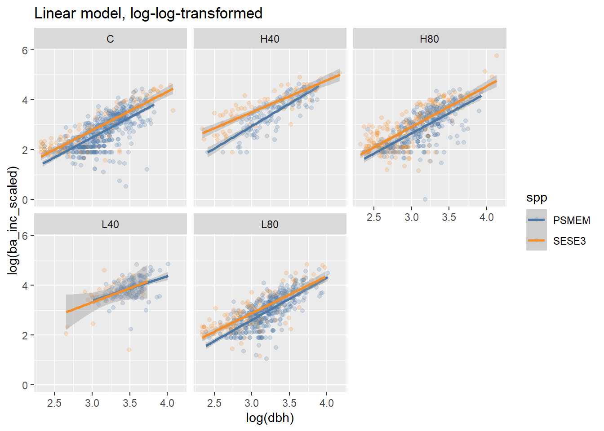
Moving forward with log - log model: Mixed effects
So, if my gamma GLM is not going to work, I will focus instead on using a mixed effect linear model. First, I’ll determine random effects using full model.
f0 <- formula(
log(ba_inc1 + scale_val) ~ log(dbh) * treatment + spp + year * cr
)
m1 <- lmer(update(f0, ~ . + (1 | tree_id) + (1 | plot)), REML = FALSE, data = test_d)
m2 <- update(m1, ~ . - (1 | plot))
m3 <- update(m1, ~ . - (1 | tree_id))
m0 <- lm(f0, data = test_d)
AICc(m0, m1, m2, m3)## df AICc
## m0 15 2481.283
## m1 17 2126.693
## m2 16 2124.687
## m3 16 2480.643Including plot in the random effects results in a singular fit and no random intercepts are calculated for plot, rendering it useless. This could mean that after accounting for fixed effects, there is no discernable variation in plot, or it could mean that there is some other problem. Either way, I don’t think it makes any sense to include it right now.
log_ba_inc_scaled ~ fixed_effects + (1 | tree_id)
log-log model fixed effects
fl1 <- list(
log(ba_inc1 + scale_val) ~ log(dbh) * treatment + (1 | tree_id),
log(ba_inc1 + scale_val) ~ log(dbh) * treatment + year + (1 | tree_id),
log(ba_inc1 + scale_val) ~ log(dbh) * treatment + spp + (1 | tree_id),
log(ba_inc1 + scale_val) ~ log(dbh) * treatment + cr + year + spp + (1 | tree_id),
log(ba_inc1 + scale_val) ~ log(dbh) * treatment + spp + (1 | tree_id),
log(ba_inc1 + scale_val) ~ log(dbh) * treatment + cr + spp + (1 | tree_id),
log(ba_inc1 + scale_val) ~ log(dbh) * treatment + year + spp + (1 | tree_id),
log(ba_inc1 + scale_val) ~ log(dbh) * treatment + year + spp * treatment + (1 | tree_id),
log(ba_inc1 + scale_val) ~ log(dbh) * treatment + cr * year + spp + (1 | tree_id),
log(ba_inc1 + scale_val) ~ log(dbh) * treatment + cr + year + spp * treatment + (1 | tree_id),
log(ba_inc1 + scale_val) ~ log(dbh) * treatment + cr + year + spp + year:spp +(1 | tree_id),
log(ba_inc1 + scale_val) ~ log(dbh) + treatment + (1 | tree_id),
log(ba_inc1 + scale_val) ~ log(dbh) + treatment + year + (1 | tree_id),
log(ba_inc1 + scale_val) ~ log(dbh) + treatment + spp + (1 | tree_id),
log(ba_inc1 + scale_val) ~ log(dbh) + treatment + year + spp + (1 | tree_id),
log(ba_inc1 + scale_val) ~ log(dbh) + treatment * year * spp + cr + (1 | tree_id),
log(ba_inc1 + scale_val) ~ log(dbh) + treatment + cr * year * spp + (1 | tree_id),
log(ba_inc1 + scale_val) ~ log(dbh) + treatment + cr * year + spp + (1 | tree_id),
log(ba_inc1 + scale_val) ~ log(dbh) + treatment + cr * year + spp * treatment + (1 | tree_id),
log(ba_inc1 + scale_val) ~ log(dbh) + treatment + cr * year * spp + treatment:spp + (1 | tree_id)
)
aic_weights(fl1, data = test_d, method = "lmm", delta_max = Inf) %>%
transmute(
Row = row,
Formula = formula,
AICc = round(aicc, 1),
RMSE = round(rmse, 3),
"Delta AIC" = round(delta, 1),
"AIC weight" = round(wi, 3),
"Marginal/conditional R^2^" = r2,
) %>%
kbl2()| Row | Formula | AICc | RMSE | Delta AIC | AIC weight | Marginal/conditional R2 |
|---|---|---|---|---|---|---|
| 20 | log(ba_inc1 + scale_val) ~ log(dbh) + treatment + cr * year * spp + treatment:spp + (1 | tree_id) | 2110.2 | 0.220 | 0.0 | 0.511 | 0.66 / 0.86 |
| 17 | log(ba_inc1 + scale_val) ~ log(dbh) + treatment + cr * year * spp + (1 | tree_id) | 2110.4 | 0.219 | 0.1 | 0.475 | 0.66 / 0.86 |
| 18 | log(ba_inc1 + scale_val) ~ log(dbh) + treatment + cr * year + spp + (1 | tree_id) | 2118.2 | 0.220 | 8.0 | 0.009 | 0.66 / 0.86 |
| 19 | log(ba_inc1 + scale_val) ~ log(dbh) + treatment + cr * year + spp * treatment + (1 | tree_id) | 2120.0 | 0.220 | 9.8 | 0.004 | 0.66 / 0.86 |
| 9 | log(ba_inc1 + scale_val) ~ log(dbh) * treatment + cr * year + spp + (1 | tree_id) | 2124.7 | 0.220 | 14.5 | 0.000 | 0.66 / 0.86 |
| 16 | log(ba_inc1 + scale_val) ~ log(dbh) + treatment * year * spp + cr + (1 | tree_id) | 2128.5 | 0.219 | 18.2 | 0.000 | 0.66 / 0.86 |
| 10 | log(ba_inc1 + scale_val) ~ log(dbh) * treatment + cr + year + spp * treatment + (1 | tree_id) | 2150.6 | 0.225 | 40.4 | 0.000 | 0.66 / 0.86 |
| 4 | log(ba_inc1 + scale_val) ~ log(dbh) * treatment + cr + year + spp + (1 | tree_id) | 2150.9 | 0.225 | 40.6 | 0.000 | 0.66 / 0.86 |
| 11 | log(ba_inc1 + scale_val) ~ log(dbh) * treatment + cr + year + spp + year:spp + (1 | tree_id) | 2151.9 | 0.224 | 41.7 | 0.000 | 0.66 / 0.86 |
| 6 | log(ba_inc1 + scale_val) ~ log(dbh) * treatment + cr + spp + (1 | tree_id) | 2217.2 | 0.239 | 107.0 | 0.000 | 0.65 / 0.84 |
| 15 | log(ba_inc1 + scale_val) ~ log(dbh) + treatment + year + spp + (1 | tree_id) | 2234.9 | 0.222 | 124.7 | 0.000 | 0.64 / 0.86 |
| 8 | log(ba_inc1 + scale_val) ~ log(dbh) * treatment + year + spp * treatment + (1 | tree_id) | 2242.3 | 0.222 | 132.1 | 0.000 | 0.64 / 0.86 |
| 7 | log(ba_inc1 + scale_val) ~ log(dbh) * treatment + year + spp + (1 | tree_id) | 2242.6 | 0.222 | 132.3 | 0.000 | 0.64 / 0.86 |
| 13 | log(ba_inc1 + scale_val) ~ log(dbh) + treatment + year + (1 | tree_id) | 2322.3 | 0.219 | 212.1 | 0.000 | 0.62 / 0.86 |
| 2 | log(ba_inc1 + scale_val) ~ log(dbh) * treatment + year + (1 | tree_id) | 2328.7 | 0.219 | 218.5 | 0.000 | 0.62 / 0.86 |
| 14 | log(ba_inc1 + scale_val) ~ log(dbh) + treatment + spp + (1 | tree_id) | 2382.7 | 0.245 | 272.5 | 0.000 | 0.61 / 0.83 |
| 3 | log(ba_inc1 + scale_val) ~ log(dbh) * treatment + spp + (1 | tree_id) | 2387.9 | 0.245 | 277.6 | 0.000 | 0.62 / 0.83 |
| 5 | log(ba_inc1 + scale_val) ~ log(dbh) * treatment + spp + (1 | tree_id) | 2387.9 | 0.245 | 277.6 | 0.000 | 0.62 / 0.83 |
| 12 | log(ba_inc1 + scale_val) ~ log(dbh) + treatment + (1 | tree_id) | 2451.1 | 0.240 | 340.9 | 0.000 | 0.59 / 0.83 |
| 1 | log(ba_inc1 + scale_val) ~ log(dbh) * treatment + (1 | tree_id) | 2454.0 | 0.241 | 343.8 | 0.000 | 0.6 / 0.83 |
Here I’ll look at the top model, plot labels refer to diameter increment (cm/year). Unfortunately the residuals do not appear to be evenly distributed. I’m not sure that I can use this model.
ba_inc_lmm <- lmer(fl1[[18]], data = test_d, REML = TRUE)
summary(ba_inc_lmm)## Linear mixed model fit by REML ['lmerMod']
## Formula: log(ba_inc1 + scale_val) ~ log(dbh) + treatment + cr * year + spp + (1 | tree_id)
## Data: test_d
##
## REML criterion at convergence: 2140.5
##
## Scaled residuals:
## Min 1Q Median 3Q Max
## -6.9159 -0.3776 0.0501 0.4472 4.3519
##
## Random effects:
## Groups Name Variance Std.Dev.
## tree_id (Intercept) 0.11701 0.3421
## Residual 0.07981 0.2825
## Number of obs: 2070, groups: tree_id, 1140
##
## Fixed effects:
## Estimate Std. Error t value
## (Intercept) -2.42383 0.12226 -19.824
## log(dbh) 1.48775 0.03912 38.031
## treatmentH40 0.54634 0.04639 11.777
## treatmentH80 0.17968 0.03261 5.510
## treatmentL40 0.53983 0.04900 11.017
## treatmentL80 0.16577 0.03193 5.191
## cr 1.97811 0.17911 11.044
## year08 0.35713 0.04610 7.747
## sppSESE3 0.23746 0.02934 8.094
## cr:year08 -1.14532 0.21669 -5.286
##
## Correlation of Fixed Effects:
## (Intr) lg(db) trtH40 trtH80 trtL40 trtL80 cr year08 sSESE3
## log(dbh) -0.947
## treatmntH40 0.049 -0.108
## treatmntH80 -0.080 -0.038 0.326
## treatmntL40 0.185 -0.246 0.240 0.290
## treatmntL80 -0.045 -0.081 0.324 0.459 0.310
## cr 0.001 -0.267 -0.060 0.039 -0.043 0.043
## year08 -0.256 0.102 -0.032 -0.016 -0.032 0.013 0.476
## sppSESE3 -0.284 0.282 -0.133 -0.211 -0.063 -0.098 -0.147 0.040
## cr:year08 0.156 0.009 0.032 0.016 0.020 -0.014 -0.589 -0.951 0.007residual_plot <- function(mod, val = 1) {
resid <- resid(mod, type = "deviance")
plot(
predict(mod), resid,
main = "residual vs fitted",
sub = "labels are diameter increment (cm/yr)",
xlab = "log(ba_inc) prediction",
ylab = "deviance residaul"
)
outliers <- which(abs(resid) > val)
label <- round(test_d$d_inc1[outliers], 3)
text(predict(mod)[outliers], resid[outliers] + 0.1, label, col = "firebrick")
}
residual_plot(ba_inc_lmm)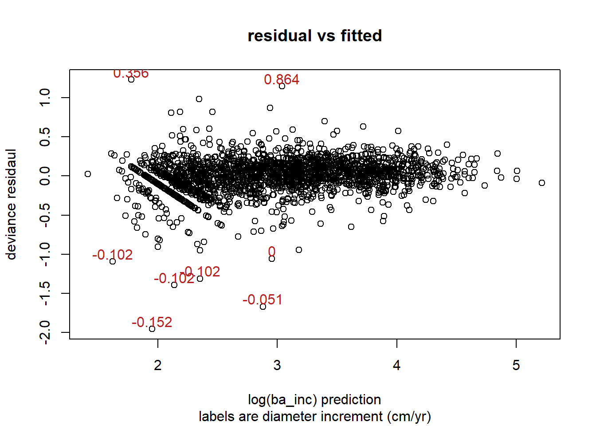
see: Cross validated post about zero variance
And the singular models section here
Here I can include the random effect of plot if I have to with plot random effect.
fl2 <- lapply(fl1, update_no_simplify, ~ . + (1 | plot))
get_aic(fl2, data = test_d, method = "lmm")What does all model selection have to say?
I could use dredge from MuMIn to test all possible models with 3 to 10 predictors models
options(na.action = "na.fail")
fm1 <- lmer(
log(ba_inc_scaled) ~ log(dbh) * treatment + cr * year * spp + (1 | tree_id),
data = test_d
)
dd <- dredge(fm1, m.lim = c(3, 10))
ddEstimated marginal means and regression table of selected model
First I choose a model from above based on parsimony and AICc:
ba_inc_mod <- ba_inc_lmm
summary(ba_inc_mod)## Linear mixed model fit by REML ['lmerMod']
## Formula: log(ba_inc1 + scale_val) ~ log(dbh) + treatment + cr * year + spp + (1 | tree_id)
## Data: test_d
##
## REML criterion at convergence: 2140.5
##
## Scaled residuals:
## Min 1Q Median 3Q Max
## -6.9159 -0.3776 0.0501 0.4472 4.3519
##
## Random effects:
## Groups Name Variance Std.Dev.
## tree_id (Intercept) 0.11701 0.3421
## Residual 0.07981 0.2825
## Number of obs: 2070, groups: tree_id, 1140
##
## Fixed effects:
## Estimate Std. Error t value
## (Intercept) -2.42383 0.12226 -19.824
## log(dbh) 1.48775 0.03912 38.031
## treatmentH40 0.54634 0.04639 11.777
## treatmentH80 0.17968 0.03261 5.510
## treatmentL40 0.53983 0.04900 11.017
## treatmentL80 0.16577 0.03193 5.191
## cr 1.97811 0.17911 11.044
## year08 0.35713 0.04610 7.747
## sppSESE3 0.23746 0.02934 8.094
## cr:year08 -1.14532 0.21669 -5.286
##
## Correlation of Fixed Effects:
## (Intr) lg(db) trtH40 trtH80 trtL40 trtL80 cr year08 sSESE3
## log(dbh) -0.947
## treatmntH40 0.049 -0.108
## treatmntH80 -0.080 -0.038 0.326
## treatmntL40 0.185 -0.246 0.240 0.290
## treatmntL80 -0.045 -0.081 0.324 0.459 0.310
## cr 0.001 -0.267 -0.060 0.039 -0.043 0.043
## year08 -0.256 0.102 -0.032 -0.016 -0.032 0.013 0.476
## sppSESE3 -0.284 0.282 -0.133 -0.211 -0.063 -0.098 -0.147 0.040
## cr:year08 0.156 0.009 0.032 0.016 0.020 -0.014 -0.589 -0.951 0.007sjPlot::tab_model(ba_inc_mod,
dv.labels = "BA increment",
show.ci = FALSE,
show.se = TRUE,
show.icc = FALSE
)| BA increment | |||
|---|---|---|---|
| Predictors | Estimates | std. Error | p |
| (Intercept) | -2.42 | 0.12 | <0.001 |
| dbh [log] | 1.49 | 0.04 | <0.001 |
| treatment [H40] | 0.55 | 0.05 | <0.001 |
| treatment [H80] | 0.18 | 0.03 | <0.001 |
| treatment [L40] | 0.54 | 0.05 | <0.001 |
| treatment [L80] | 0.17 | 0.03 | <0.001 |
| cr | 1.98 | 0.18 | <0.001 |
| year [08] | 0.36 | 0.05 | <0.001 |
| spp [SESE3] | 0.24 | 0.03 | <0.001 |
| cr * year [08] | -1.15 | 0.22 | <0.001 |
| Random Effects | |||
| σ2 | 0.08 | ||
| τ00 tree_id | 0.12 | ||
| N tree_id | 1140 | ||
| Observations | 2070 | ||
| Marginal R2 / Conditional R2 | 0.659 / 0.862 | ||
Here I get the marginal estimates and pairwise comparisons for the selected model. First I do a pairwise comparison on treatments.
ba_inc_ref <- ref_grid(ba_inc_mod)
emmeans(ba_inc_ref, pairwise ~ treatment, type = "response")## $emmeans
## treatment response SE df lower.CL upper.CL
## C 12.1 0.459 1153 11.2 13.0
## H40 25.7 1.321 1139 23.2 28.4
## H80 15.8 0.550 1137 14.7 16.9
## L40 25.5 1.409 1138 22.9 28.4
## L80 15.5 0.552 1128 14.4 16.6
##
## Results are averaged over the levels of: year, spp
## Degrees-of-freedom method: kenward-roger
## Confidence level used: 0.95
## Intervals are back-transformed from the log(mu + 6.685) scale
##
## $contrasts
## contrast ratio SE df null t.ratio p.value
## C / H40 0.579 0.0269 1125 1 -11.776 <.0001
## C / H80 0.836 0.0272 1140 1 -5.510 <.0001
## C / L40 0.583 0.0286 1122 1 -11.017 <.0001
## C / L80 0.847 0.0271 1120 1 -5.191 <.0001
## H40 / H80 1.443 0.0681 1136 1 7.764 <.0001
## H40 / L40 1.007 0.0592 1115 1 0.111 1.0000
## H40 / L80 1.463 0.0688 1126 1 8.092 <.0001
## H80 / L40 0.698 0.0351 1136 1 -7.152 <.0001
## H80 / L80 1.014 0.0341 1117 1 0.414 0.9938
## L40 / L80 1.454 0.0720 1128 1 7.556 <.0001
##
## Results are averaged over the levels of: year, spp
## Degrees-of-freedom method: kenward-roger
## P value adjustment: tukey method for comparing a family of 5 estimates
## Tests are performed on the log scaleThen I compare our two species of interest
emmeans(ba_inc_ref, pairwise ~ spp, type = "response")## $emmeans
## spp response SE df lower.CL upper.CL
## PSMEM 15.5 0.354 1113 14.8 16.2
## SESE3 21.5 0.734 1219 20.1 22.9
##
## Results are averaged over the levels of: treatment, year
## Degrees-of-freedom method: kenward-roger
## Confidence level used: 0.95
## Intervals are back-transformed from the log(mu + 6.685) scale
##
## $contrasts
## contrast ratio SE df null t.ratio p.value
## PSMEM / SESE3 0.789 0.0231 1199 1 -8.093 <.0001
##
## Results are averaged over the levels of: treatment, year
## Degrees-of-freedom method: kenward-roger
## Tests are performed on the log scaleThis visualization shows that most pairwise comparisons of species and treatment combinations are significantly different.
emmeans(ba_inc_ref, ~ treatment + spp) %>% pwpp(type = "response")
emmeans(ba_inc_ref, pairwise ~ treatment + spp, type = "response")## $emmeans
## treatment spp response SE df lower.CL upper.CL
## C PSMEM 9.98 0.368 1154 9.28 10.7
## H40 PSMEM 22.10 1.198 1117 19.84 24.5
## H80 PSMEM 13.26 0.524 1139 12.26 14.3
## L40 PSMEM 21.91 1.244 1118 19.57 24.5
## L80 PSMEM 12.99 0.483 1114 12.06 14.0
## C SESE3 14.45 0.713 1170 13.09 15.9
## H40 SESE3 29.81 1.641 1171 26.73 33.2
## H80 SESE3 18.61 0.775 1164 17.13 20.2
## L40 SESE3 29.57 1.763 1166 26.27 33.2
## L80 SESE3 18.26 0.816 1165 16.71 19.9
##
## Results are averaged over the levels of: year
## Degrees-of-freedom method: kenward-roger
## Confidence level used: 0.95
## Intervals are back-transformed from the log(mu + 6.685) scale
##
## $contrasts
## contrast ratio SE df null t.ratio p.value
## C PSMEM / H40 PSMEM 0.579 0.0269 1125 1 -11.776 <.0001
## C PSMEM / H80 PSMEM 0.836 0.0272 1140 1 -5.510 <.0001
## C PSMEM / L40 PSMEM 0.583 0.0286 1122 1 -11.017 <.0001
## C PSMEM / L80 PSMEM 0.847 0.0271 1120 1 -5.191 <.0001
## C PSMEM / C SESE3 0.789 0.0231 1199 1 -8.093 <.0001
## C PSMEM / H40 SESE3 0.457 0.0235 1175 1 -15.222 <.0001
## C PSMEM / H80 SESE3 0.659 0.0257 1171 1 -10.699 <.0001
## C PSMEM / L40 SESE3 0.460 0.0255 1167 1 -14.002 <.0001
## C PSMEM / L80 SESE3 0.668 0.0275 1166 1 -9.791 <.0001
## H40 PSMEM / H80 PSMEM 1.443 0.0681 1136 1 7.764 <.0001
## H40 PSMEM / L40 PSMEM 1.007 0.0592 1115 1 0.111 1.0000
## H40 PSMEM / L80 PSMEM 1.463 0.0688 1126 1 8.092 <.0001
## H40 PSMEM / C SESE3 1.362 0.0791 1123 1 5.317 <.0001
## H40 PSMEM / H40 SESE3 0.789 0.0231 1199 1 -8.093 <.0001
## H40 PSMEM / H80 SESE3 1.138 0.0628 1127 1 2.340 0.3639
## H40 PSMEM / L40 SESE3 0.794 0.0533 1131 1 -3.441 0.0212
## H40 PSMEM / L80 SESE3 1.154 0.0658 1127 1 2.510 0.2639
## H80 PSMEM / L40 PSMEM 0.698 0.0351 1136 1 -7.152 <.0001
## H80 PSMEM / L80 PSMEM 1.014 0.0341 1117 1 0.414 1.0000
## H80 PSMEM / C SESE3 0.944 0.0455 1163 1 -1.197 0.9728
## H80 PSMEM / H40 SESE3 0.547 0.0306 1179 1 -10.793 <.0001
## H80 PSMEM / H80 SESE3 0.789 0.0231 1199 1 -8.093 <.0001
## H80 PSMEM / L40 SESE3 0.550 0.0331 1173 1 -9.931 <.0001
## H80 PSMEM / L80 SESE3 0.800 0.0376 1159 1 -4.757 0.0001
## L40 PSMEM / L80 PSMEM 1.454 0.0720 1128 1 7.556 <.0001
## L40 PSMEM / C SESE3 1.353 0.0794 1120 1 5.154 <.0001
## L40 PSMEM / H40 SESE3 0.784 0.0504 1131 1 -3.791 0.0061
## L40 PSMEM / H80 SESE3 1.131 0.0637 1128 1 2.178 0.4725
## L40 PSMEM / L40 SESE3 0.789 0.0231 1199 1 -8.093 <.0001
## L40 PSMEM / L80 SESE3 1.146 0.0659 1128 1 2.375 0.3416
## L80 PSMEM / C SESE3 0.931 0.0423 1147 1 -1.578 0.8589
## L80 PSMEM / H40 SESE3 0.539 0.0290 1168 1 -11.485 <.0001
## L80 PSMEM / H80 SESE3 0.778 0.0327 1142 1 -5.976 <.0001
## L80 PSMEM / L40 SESE3 0.543 0.0312 1164 1 -10.620 <.0001
## L80 PSMEM / L80 SESE3 0.789 0.0231 1199 1 -8.093 <.0001
## C SESE3 / H40 SESE3 0.579 0.0269 1125 1 -11.776 <.0001
## C SESE3 / H80 SESE3 0.836 0.0272 1140 1 -5.510 <.0001
## C SESE3 / L40 SESE3 0.583 0.0286 1122 1 -11.017 <.0001
## C SESE3 / L80 SESE3 0.847 0.0271 1120 1 -5.191 <.0001
## H40 SESE3 / H80 SESE3 1.443 0.0681 1136 1 7.764 <.0001
## H40 SESE3 / L40 SESE3 1.007 0.0592 1115 1 0.111 1.0000
## H40 SESE3 / L80 SESE3 1.463 0.0688 1126 1 8.092 <.0001
## H80 SESE3 / L40 SESE3 0.698 0.0351 1136 1 -7.152 <.0001
## H80 SESE3 / L80 SESE3 1.014 0.0341 1117 1 0.414 1.0000
## L40 SESE3 / L80 SESE3 1.454 0.0720 1128 1 7.556 <.0001
##
## Results are averaged over the levels of: year
## Degrees-of-freedom method: kenward-roger
## P value adjustment: tukey method for comparing a family of 10 estimates
## Tests are performed on the log scaleHere I plot the expected response by species and dbh, averaged over the effect of year and add an inset for the interaction effect of crown ratio and year. For this I define two more reference grids, one with a range of dbh to include and one with a range of cr to include
library(patchwork)
ba_inc_ref_dbh <- ref_grid(
ba_inc_mod,
at = list(dbh = seq(10, 60, 2))
)
ba_inc_ref_cr <- ref_grid(
ba_inc_mod,
at = list(cr = seq(.05, .65, .1))
)
a <- emmip(
ba_inc_ref_dbh,
spp ~ dbh | treatment,
CIs = TRUE,
plotit = FALSE,
type = "response"
) %>%
relevel_treatment() %>%
mutate(
spp = recode(spp, SESE3 = "Redwood", PSMEM = "Douglas-fir")
) %>%
ggplot(aes(dbh, yvar, color = spp)) +
geom_line() +
facet_wrap(~ treatment ) +
geom_ribbon(aes(ymin = LCL, ymax = UCL, color = NULL, fill = spp), alpha = .2) +
theme_bw() +
theme(
legend.position = c(0.08, 0.9),
legend.background = element_blank(),
legend.title = element_blank()
) +
scale_color_manual(
values = c("#969696", "black"),
aesthetics = c("color", "fill")
) +
labs(
x = "DBH (cm)",
y = expression(BAI ~ (cm^2 ~ year^-1))
# title = "back transformed from log-log model, averaged over year"
)
b <- emmip(
ba_inc_ref_cr,
year ~ cr,
CIs = TRUE,
plotit = FALSE,
type = "response"
) %>%
mutate(year = fct_recode(year, "2008 - 2013" = "08", "2013 - 2018" = "13")) %>%
ggplot(aes(cr, yvar, color = year)) +
geom_line() +
# facet_wrap(~ treatment ) +
geom_ribbon(aes(ymin = LCL, ymax = UCL, color = NULL, fill = year), alpha = .2) +
theme_bw() +
theme(
legend.position = c(0.35, 0.75),
legend.background = element_blank(),
legend.title = element_blank(),
axis.title.y = element_text(margin = margin(b = 0), vjust = 0.01),
plot.margin = unit(c(2, 2, 2, 1), "mm")
) +
scale_color_manual(
values = c("#969696", "black"),
aesthetics = c("color", "fill")
) +
scale_y_continuous(limits = c(0, 150)) +
labs(
x = "Crown ratio",
y = expression(BAI ~ (cm^2 ~ year^-1))
# title = "Effect of interaction of year and crown-ratio on BA increment"
)
layout <- c(
patchwork::area(1, 1, 200, 300),
patchwork::area(108, 219, 200, 300)
)
a + b + plot_layout(design = layout)
ggsave(
filename = "figs/bai_prediction.pdf",
device = cairo_pdf,
width = 18.2,
height = 13,
units = "cm"
)
ggsave(
filename = "figs/bai_prediction.jpg",
width = 18.2,
height = 13,
units = "cm"
)Now we show the estimated mean BAI response of a tree of average size, with average CR and for an average year, and identify which species/treatment combinations vary significantly from each other.
dodge <- position_dodge(width = 0.9)
emmeans(ba_inc_ref, ~ treatment + spp, type = "response") %>%
multcomp::cld(Letters = letters, decreasing = TRUE) %>%
mutate(.group = gsub(" +", "", .group)) %>%
relevel_treatment() %>%
ggplot(aes(treatment, response, fill = spp)) +
geom_errorbar(
aes(ymin = lower.CL, ymax = upper.CL),
position = dodge,
width = 0.2
) +
geom_col(position = dodge) +
theme_bw() +
theme(
legend.position = c(0.8, 0.8),
legend.background = element_blank()
) +
scale_fill_manual(
values = c("#969696", "black"),
labels = c("Douglas-fir", "Redwood")
) +
geom_text(
aes(y = upper.CL, label = .group),
position = dodge,
vjust = -0.5
) +
scale_y_continuous(expand = c(0.0, 0, 0.08, 0)) +
labs(y = expression(BAI ~ (cm^2 ~ year^-1)), x = "Treatment", fill = NULL)
ggsave(
filename = "figs/bai_mean_compare.pdf",
device = cairo_pdf,
width = 8.84,
height = 9,
units = "cm"
)
ggsave(
filename = "figs/bai_mean_compare.jpg",
width = 8.84,
height = 9,
units = "cm"
)Model validation
# augment data with fitted, residual cooks distance and leverage
augment1 <- function(dat, mod) {
dat %>% mutate(
fitted = fitted(mod),
resid = resid(mod, type = "pearson"),
cooks = cooks.distance(mod),
lev = hatvalues(mod)
)
}
ba_inc_d <- augment1(test_d, ba_inc_mod)Residual vs fitted
I also plot residual vs the predictor and explanatory variables
plot(
resid ~ fitted,
data = ba_inc_d,
pch = 16,
xlab = "fitted values",
ylab = "Scaled residuals",
main = "Residual vs fitted, colored by treatment",
col = as.factor(treatment)
)
abline(0,0)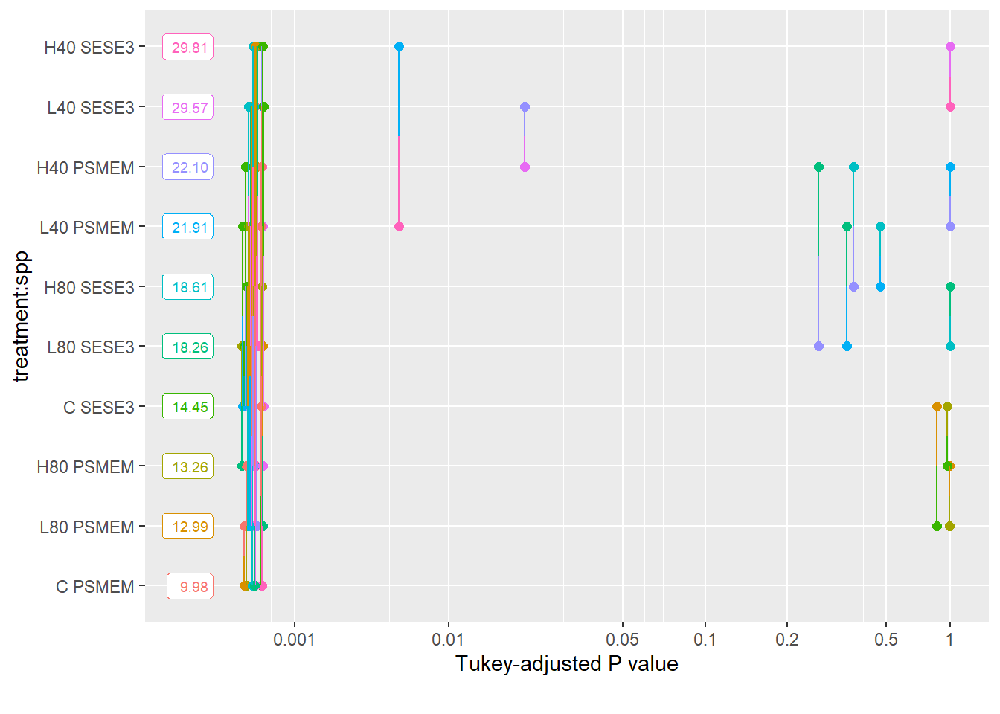
plot(
resid ~ log(dbh),
data = ba_inc_d,
xlab = "log(dbh)",
ylab = "Scaled residuals",
main = "Residual vs log(dbh)",
col = 2,
pch = 16
)
abline(0,0)plot(
resid ~ cr,
data = ba_inc_d,
xlab = "crown ratio",
ylab = "Scaled residuals",
main = "Residual vs crown ratio, colored by species",
col = as.factor(spp),
pch = 16
)
abline(0,0)Homogeneity of random group residuals
I can check that random group residuals are homogenous.
I can’t really check if residuals are homogenous for each tree, because there are over a thousand of them.
plot(
ba_inc_mod,
resid(., scaled=TRUE) ~ fitted(.)| plot,
abline = 0,
pch = 16,
xlab = "Fitted values",
ylab = "Standardised residuals"
)
Normality of residuals
It seems we are violating the assumption of normality of residuals here.
qqnorm(resid(ba_inc_mod, type = "pearson"), pch=16, col = 1, main = "QQplot for pearosn residuals")
qqline(resid(ba_inc_mod, type = "pearson"))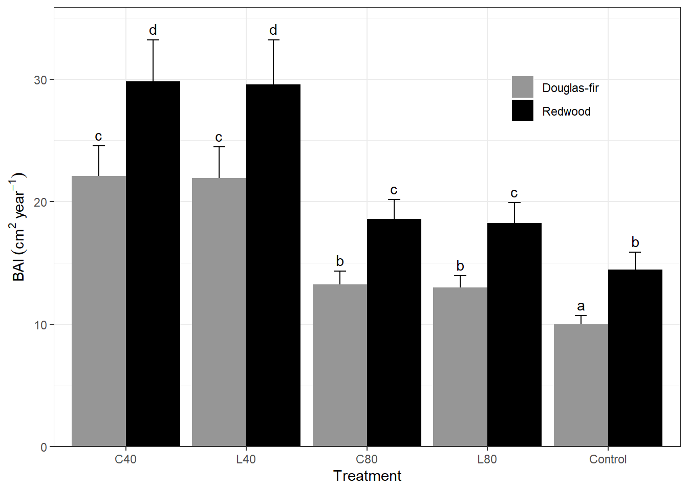
Leverage and Cooks distance
Cooks outliers, defined as > 3 x mean(cooks distance) are colored in red. None of these “outliers” seem like they would disproportionately affect regression.
# Plot leverage against standardised residuals
plot(
resid ~ lev,
data = ba_inc_d,
las = 1,
ylab = "Standardised residuals",
xlab = "Leverage",
col = palette.colors(palette = "tableau10", alpha = .5)[factor(year)],
main = "Leverage vs residuals",
pch = 16
)
points(resid ~ lev, data = filter(ba_inc_d, cooks > 6 * mean(cooks)), pch = 16, col =3)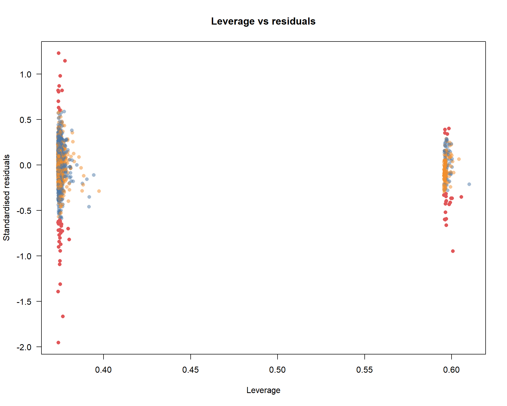
plot(ba_inc_d$lev,pch=16,col="red",ylim=c(0,1.2),las=1,ylab="Leverage/Cook's distance value")
points(ba_inc_d$cooks,pch=17,col="blue")
points(x=1650,y=1,pch=16,col="red")
points(x=1650,y=0.8,pch=17,col="blue")
text(x=1650,y=1,"Leverage",adj=c(0,0.5))
text(x=1650,y=0.8,"Cook's distance",adj=c(0,0.5))Random effects distribution
The distribution of random effects (plots) should be roughly normal. Here our distribution is skewed, from what I’ve read, this should not be a problem for estimates or their std’s.
hist(as.vector(unlist(ranef(ba_inc_mod)$tree_id)), col = 1)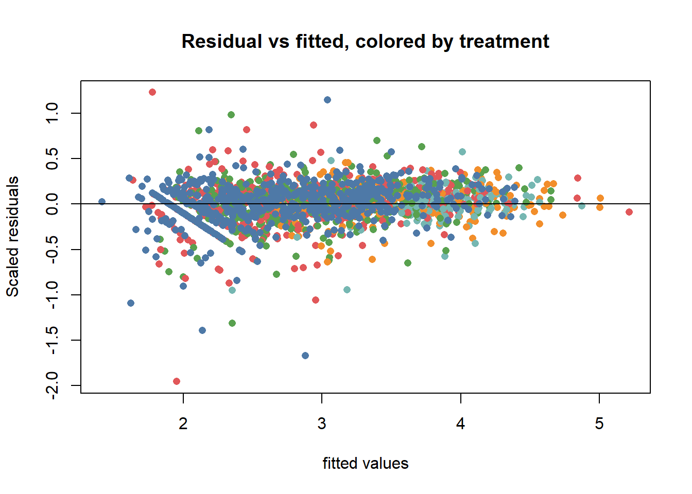
Is a glm going to work?
While GLMs with gamma family are used in the literature for basal area increment models. I had a hard time getting them to converge. They are computationally expensive (slow) to fit and when I look at the residuals, they are not all the different from the log-log model fit above.
In looking at the results for the GLM model, it looks very similar to the linear log log model, the qq plot reveals similarly light tailed distribution.
glm_mod <- glmer(
ba_inc_scaled ~ treatment + scale(dbh) + scale(cr) + spp + year + (1 | plot) + (1 | tree_id),
data = test_d,
family = Gamma(link = "log")
)
allFit(glm_mod)
glm_converge <- mixedup::converge_it(glm_mod)
summary(glm_mod)
plot(predict(glm_mod), resid(glm_mod, type = "deviance"))